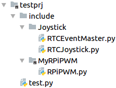

Фичи Python
Содержание
Полезные моменты
Тут будут собраны всякие полезные моменты, которые могут облегчить процесс написания кода.
Подключение модулей из других папок
Для удобства в проекте все внешние подключаемые модули вынести в отдельную папку, например include.
Допустим структура проекта выглядит вот так:

Здесь в папке include лежат два модуля RTCJoystick и PRiPWM.
Модуль RPiPWM можно подключить к файлу test.py таким образом:
import sys
sys.path.append('include')
from MyRPiPWM import RPiPWM
Это эквивалентно тому, что мы положили файл RPiPWM.py рядом с файлом test.py.
Поскольку модуль RTCJoystick требует подключения модуля RTCEventMaster, несмотря на то, что файлы лежат рядом, также подключить модуль не получится, python не знает пути до RTCEventMaster и выдаст ошибку. Поэтому, чтобы его подключить нужно написать вот так:
import sys
sys.path.append('include/Joystick')
import RTCJoystick
Чтобы так не делать, по хорошему импортируемый модуль должен содержать файл __init__.py в котором будет описано, что и откуда данный модуль импортирует для своей работы. Например в случае с RTCJoystick он должен выглядеть так:
from . import RTCEventMaster
В этом же файле может содержаться информация о версии импортируемого модуля.
Подробнее смотреть тут.
Допустимые записи:
import sys
sys.path.append('include')
sys.path.append('include/Joystick')
from MyRPiPWM import RPiPWM
import RTCJoystick
или
import sys
sys.path.append('include/MyRPiPWM')
sys.path.append('include/Joystick')
import RTCJoystick
import RPiPWM
Также (вроде) допустимо называть папку также как модуль, и писать, например:
from RPiPWM import RPiPWM
ВАЖНО: требуется дополнительное исследование этого всего.
Специальные методы
Специальные методы - одна из основных фич питона. Заставляют ваши классы работать подобно встроенных классов, а также делают много чего полезного.
Тут будут описаны основные и наиболее полезные методы
Инициализация/окончание работы
- __init__(self, *args)
class Test: def __init__(self, *args): pass Test(1, 2, 3) Метод - инициализатор класса, принимает аргументы, при котором будет вызван конструктор класса.
- __new__(cls, *args)
class Test:
def __new__(cls, *args):
pass
Метод - инициализатор, который вызывается самым первым до __init__ принимает в качестве аргумента класс и аргументы, которые будут переданы в __init__. Используется редко, в основном полезен при наследовании от неизменяемых классов(+ при наследовании от numpy.ndarray) - __del__(self) Деструктор, вызывается при окончании работы интерпритатора, когда запускается сборщик мусора. Полезен для дополнительной чистки программы - закрытие портов, файлов и т.д.
Приведение типов;
Приводят типы к встроенным типам int, float, double и т.д. Полезны, иногда работают неявно:
if object:
pass
Для Проверки истинности вызовется приведение к bool.
class Gpio:
def __init__(self):
self._pin = 1
def __int__(self):
return self._pin
gpio = Gpio()
pin = int(gpio)
- __int__(self) Преобразование типа в int.
- __long__(self) Преобразование типа в long.
- __float__(self) Преобразование типа в float.
- __complex__(self) Преобразование типа в комплексное число.
- __oct__(self) Преобразование типа в восьмеричное число.
- __hex__(self) Преобразование типа в шестнадцатиричное число.
- __index__(self)
Преобразование типа к int, когда объект используется в срезах (выражения вида [start:stop:step]). Если вы определяете свой числовый тип, который может использоваться как индекс списка, вы должны определить __index__.
Контроль доступа к аттрибутам;
Тут находятся одни из самых важных специальных методов.
-
__setattr__(self, name, value) Это один из мощных методов, который при неправильном использовании сломает ваше приложение, психику и, возможно, жизнь. Его первоначальная задача - создать в классе self аттрибут с именем name и значением value или изменить аттрибут с таким же именем:
class Past:
def __init__(self):
pass
past = Past()
past.lol = 2 # равноценно вызову past.__setattr__("lol", 2)
print(past.lol) # будет выведено 2
-
В чем особенности:
-
Можно запрещать присваивать все аттрибуты:
class Enum:
first = 1
second = 2
def __setattr__(self, key, value):
raise AttributeError("Нельзя менять значения")
enum = Enum()
enum.first = 2 # вызовется исключение
НО))) Вот так сделать не получится:
class SomeData:
def __init__(self):
self.data = 1 # тут вызовется исключение, т.к.
вызовется self.__setattr__("data", 1) :)
def __setattr__(self, key, value):
raise AttributeError("Нельзя менять значения")
data = SomeData()
-
А еще он может подгадить так:
class Test:
def __init__(self):
self.data = 1 # тут класс войдет в рекурсию) и при привышении стека вызовов вызовется исключение
def __setattr__(self, key, value):
if key == "data":
self.data = value
Test()
Решением этого является:
class Test:
def __init__(self):
self.data = 1
self.otherData = 2
def __setattr__(self, key, value):
self.__dict__[key] = value # добавляем/изменяем
значение одного из полей класса без вызова __setattr__
test = Test()
print(test.__dict__) # выведется {'data': 1, 'someData': 2}
Казалось бы, зачем он вообще тогда нужен, и лучше бы его не трогать, и это разумно)
-
Приватные переменные
class Private:
def __init__(self):
self.__privateVar = 22 # В памяти класса эта переменная будет храниться как _Private__privateVar
private = Private()
private.__privateVar = 1 # Т.к. переменная __privateVar была создана с другим именем, имя __privateVar свободно,
# и оно занимается данным значением
Данный метод - один из ключевых специальных методов класса, который может сделать питон более похожим на стандартное ООП
Представление классов;
class Test:
def __init__(self):
self._data = 10
def __repr__(self):
return "
test = Test()
print(test) # напечатает
Сравнение/Арифметические операторы и т.д.;
Дальнейшие операторы, могут внести не понятный интуитивно смысл и использовать их нужно очень осторожно
Их можно и иногда нужно неиспользовать
- __cmp__(self, other) Самый базовый из методов сравнения. Он, в действительности, определяет поведение для всех операторов сравнения (>, ==, !=, итд.), но не всегда так, как вам это нужно (например, если эквивалентность двух экземпляров определяется по одному критерию, а то что один больше другого по какому-нибудь другому). __cmp__ должен вернуть отрицательное число, если self < other, ноль, если self == other, и положительное число в случае self > other. Но, обычно, лучше определить каждое сравнение, которое вам нужно, чем определять их всех в __cmp__. Но __cmp__ может быть хорошим способом избежать повторений и увеличить ясность, когда все необходимые сравнения оперерируют одним критерием;
- __eq__(self, other) Определяет поведение оператора равенства, ==
- __ne__(self, other) Определяет поведение оператора неравенства, !=
- __lt__(self, other) Определяет поведение оператора меньше, <
- __gt__(self, other) Определяет поведение оператора больше, >
- __le__(self, other) Определяет поведение оператора меньше или равно, <=
- __ge__(self, other) Определяет поведение оператора больше или равно, >=
- __pos__(self) Определяет поведение для унарного плюса (+some_object)
- __neg__(self) Определяет поведение для отрицания(-some_object)
- __abs__(self) Определяет поведение для встроенной функции abs()
- __invert__(self) Определяет поведение для инвертирования оператором ~
- __round__(self, n) Определяет поведение для встроенной функции round(). n это число знаков после запятой, до которого округлить;
- __floor__(self) Определяет поведение для math.floor(), то есть, округления до ближайшего меньшего целого.
- __ceil__(self) Определяет поведение для math.ceil(), то есть, округления до ближайшего большего целого.
- __trunc__(self) Определяет поведение для math.trunc(), то есть, обрезания до целого.
- __add__(self, other) Сложение
- __sub__(self, other) Вычитание
- __mul__(self, other) Умножение
- __floordiv__(self, other) Целочисленное деление, оператор
- __div__(self, other) Деление, оператор /
- __mod__(self, other) Остаток от деления, оператор %
- __divmod__(self, other) Определяет поведение для встроенной функции divmod()
- __pow__ Возведение в степень, оператор **
- __lshift__(self, other) Двоичный сдвиг влево, оператор <<
- __rshift__(self, other) Двоичный сдвиг вправо, оператор >>
- __and__(self, other) Двоичное И, оператор &
- __or__(self, other) Двоичное ИЛИ, оператор |
- __xor__(self, other) Двоичный xor, оператор ^